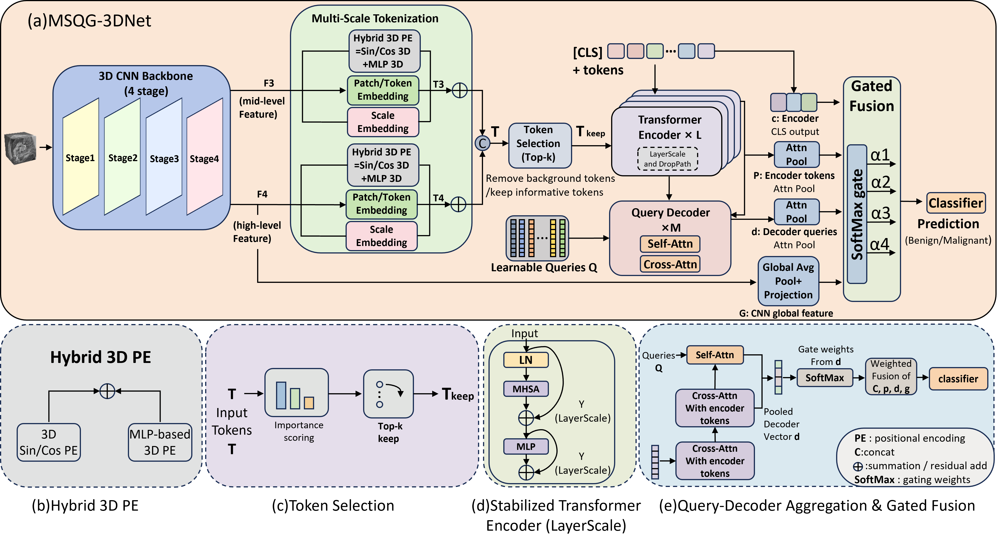
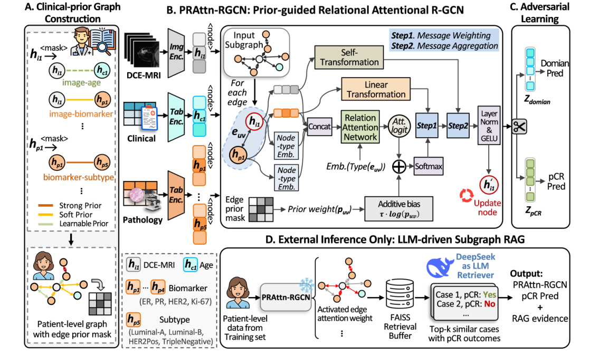

The Intelligent Medical Computing Laboratory (IMCL, also known as GEMLab) has highlighted ClinRAG-GRAPH, a clinical-prior retrieval-augmented graph model for predicting pathological complete response (pCR) to neoadjuvant chemotherapy in breast cancer. The work has been selected for MICCAI 2026.
Neoadjuvant chemotherapy is an important treatment option for locally advanced or high-risk breast cancer. For some breast-cancer subtypes, achieving pCR is closely associated with a favourable prognosis. Because pCR is usually confirmed through pathological assessment after surgery, predicting the likelihood of response before treatment could provide an earlier reference for individualized treatment decisions.
Making clinical relationships explicit
ClinRAG-GRAPH addresses three challenges in pre-treatment pCR prediction: insufficient modeling of multimodal dependencies, MRI protocol differences across centres, and predictions that lack traceable case-level evidence. The framework represents dynamic contrast-enhanced MRI (DCE-MRI), structured clinical variables, and biopsy-derived pathological biomarkers as a patient-level clinical-prior graph.
Based on clinical guidelines and radiological consensus, the graph encodes different relationship strengths as Strong Prior, Soft Prior, and Learnable Prior. A prior-guided relational graph convolution module then performs structured message passing. Unlike simple feature concatenation, this design makes clinically meaningful interactions explicit while retaining data-driven adaptability in later layers.

Reducing centre-specific MRI bias
Multi-centre DCE-MRI data inevitably differ in scanners, sequence parameters, acquisition protocols, and post-processing. These centre-specific patterns can dominate image representations and weaken generalization. ClinRAG-GRAPH therefore adds a domain-classification branch to the MRI representation and uses a gradient-reversal layer for domain-adversarial training.
The model learns features that are discriminative for pCR while reducing information that reveals the acquisition centre. This encourages the representation to focus on treatment response rather than on device- or protocol-specific texture. Ablation results show that domain-adversarial disentanglement further improves internal and external test performance.
LLM-guided retrieval of similar historical cases
During external inference, graph-level patient representations, MRI representations, clinical-pathological representations, and edge-attention patterns from the training set are organized into a searchable evidence bank. A large language model generates a constrained retrieval strategy from the current patient representation, while FAISS retrieves the most similar historical cases.
The LLM does not directly output a pCR diagnosis. Instead, it serves as a retrieval planner and post-hoc explanation tool. The final prediction combines the output of the prior-guided graph model with evidence from retrieved neighbours. This design uses the case-matching strengths of retrieval-augmented generation while preserving the calibration and verifiability of the original predictive model.

Multi-centre validation
The study integrates two public datasets and data from three institutional centres. DUKE, I-SPY1, and one institutional centre are used for development, with patient-level training, validation, and internal test splits. Two additional institutional centres are held out as fully independent external test sets to evaluate cross-centre generalization.
ClinRAG-GRAPH achieves an AUC of 0.815 on the internal test set, outperforming comparison methods including R-GCN, LMF, and iMRhpc. On the two independent external centres, it achieves AUCs of 0.774 and 0.712, respectively. Paired DeLong tests are used to assess AUC differences, with the main comparisons reaching statistical significance.
Ablation studies show contributions from the clinical-prior graph, prior-guided relational graph convolution, domain-adversarial disentanglement, and LLM-driven subgraph RAG. RAG is used primarily during external testing and further improves prediction under distribution shift. SHAP analysis and retrieved-case examples also indicate that the model can reason through clinically meaningful relationships involving ER, PR, HER2, Ki-67, age, and MRI features.
Toward evidence-grounded precision treatment
ClinRAG-GRAPH unifies clinical-prior graphs, relational graph convolution, domain-adversarial learning, and LLM-driven subgraph retrieval to address three key barriers in multi-centre pre-treatment pCR prediction: unstructured multimodal relationships, MRI centre effects, and a lack of case-level evidence.
In the clinical workflow, the method uses pre-treatment DCE-MRI, clinical variables, and biopsy-derived pathological biomarkers, then retrieves similar historical patients during inference to support the model output. The study also identifies longitudinal data collection as an important next step for improving prediction of neoadjuvant treatment response.
Paper: ClinRAG-GRAPH: Clinical-prior Retrieval-Augmented Graph Model with Domain Adversarial Learning for Breast pCR Prediction
Authors: Yaofei Duan, Yuhao Huang, Tianyu Zhang, Yuan Gao, Luyi Han, Xin Wang, Xinyu Xie, Xinglong Liang, Chunyao Lu, Muzhen He, Patrick Pang, Yue Sun, Ning Mao, Tao Tan, and Ritse Mann.